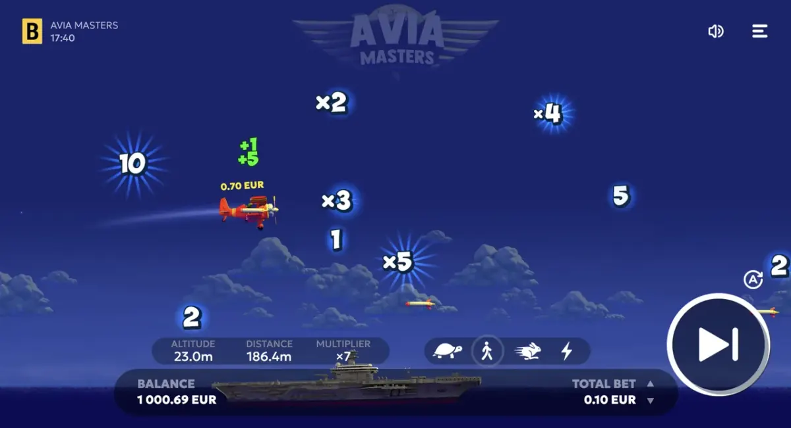

Strategy
Aviamasters Auto Cash-Out: Settings That Survive a Bad Streak
Auto cash-out does not beat the house edge — it removes the one thing that reliably breaks a session: your reaction time. Here is how to set it and what each range costs.
🔞 18+ only · Real-money gambling

Auto cash-out is the only setting in Aviamasters that changes how a session behaves. It does not touch the RTP and it does not make a round more likely to pay — it just takes the decision away from you at the moment you are least able to make it: mid-flight, with the multiplier still climbing.
What the setting actually does
You enter a multiplier before the round. The moment the plane reaches it, the bet is closed at that value. If the round ends first, the stake is gone. That is the whole mechanic — there is no partial exit and no second chance.
Why manual cash-out loses money
Reaction time. Between deciding to stop and the click there is a delay of a few hundred milliseconds. On fast rounds that is the difference between 2.1× and nothing.
Chasing. Manual play invites “one more tick”, and the tick that ends the round is indistinguishable from the ones before it.
Tilt. After two lost rounds most players raise the target, which is exactly the wrong direction.
Ranges and what they cost
Auto cash-out | Rounds that reach it | What a session looks like |
|---|---|---|
1.2× – 1.5× | Most | Slow drift, small swings, long sessions |
2× – 3× | Roughly half | The default trade-off |
5×+ | Few | Long dry spells, occasional large hits |
Every column above returns the same RTP over a long enough sample. The setting changes the shape of the ride, not the destination.
A routine that holds up
Pick one target and keep it for the whole session — switching mid-session is just manual play with extra steps.
Set the stake so that twenty losing rounds in a row are survivable.
Set a loss limit in money, not in rounds.
Stop at the limit. The demo costs nothing; the balance does.
Test the settings without money first in the free demo — the auto cash-out field behaves identically there.